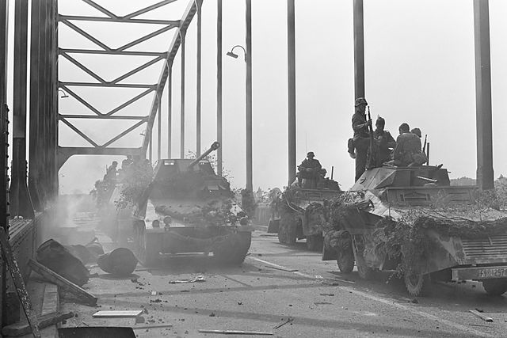
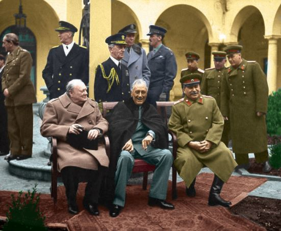
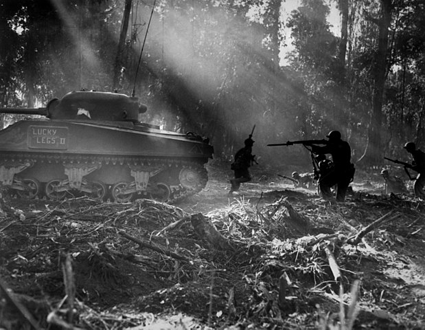

Cold War | 20th Century | Essay
Evidence that the Cold War started in World War 2
September 2020
When did the Cold War really start?
Introduction
When World War II was coming to an end, tensions between the allied countries arose. Some consider the starting point of the Cold War to be 1947 (like Wikipedia states), but the tensions truly date back to / originate in 1944-5. Here is a hand full of evidence for the argument that the Cold War began before 1947.
The Molotov–Ribbentrop Pact
The USSR and Germany secretly agreed to invade and split up Poland into respective spheres of influence. This pact went against agreements between USSR and the other Allies. When the USSR was attacked in 1941 by Germany it automatically joined the Allied forces.But, it goes without saying that USSR's earlier betrayal did not sit real well: the allies were not always each other's best friend. Russia's earlier retreat in 1917 (WWI) amplified their image of unreliability.
The Molotov-Ribbentrop pact has many alternative names, such as the Hitler-Stalin Pact and the Devil's Alliance.
D-Day
From '43 onwards Russia made a series of huge military successes and reclaimed much German-occupied land. Their advance was eventually so sizeable, that the Allies wanted to make a noticeable, 'set-in-stone' contribution to the war too.
D-Day had been planned for a long time, but '44 seemed the opportune time to commit to invasion. Russia had culminated in its mobilization and production process (it was now a monstrous engine for the Germans). D-Day was the result of the West's natural longing to have a 'set-in-stone' contribution to the recapture of territories too.
Operation Market Garden
Soon after D-Day followed Operation Market Garden; it was all about speeding up the Western advance into Germany (and ultimately Berlin). While fighting the same enemy, the USSR and the West were themselves in a competition to be first to reach the German capital Berlin.
Eisenhower talked about his hope of reaching Berlin: “... would be adequate to get one thrust to Berlin".
Still from the ‘A Bridge Too Far’ film. The Arnhem (Netherlands) bridge marked the failure of Market Garden, and disabled the allied from advancing into Germany (and Berlin) over the coming winter.
Lend-Lease
Lend-Lease is an American program that leased war materials to Allied nations. This way they were able to be involved in both the East- and Westfront. What soured intra-Allied relations was that the USSR repayed a mere 7.5% of the USA's lease expenses. But it also shows how soon after the war USA-USSR relations were already at a low.
War-time Diplomacy
War-time Conferences and intra-Allied Diplomacy testify to internal politics
- Memos and contracts such as the Percentages Agreement show that Allied forces were already occupied with post-war spheres of influence when World War II was still raging.
- The diplomatic process of creating Israel in the Middle East is another example of geopolitics. This creation vividly illustrates how the Allies already contemplated the post-war era before WWII was over: they wanted ideological footholds in unclaimed territories. Indeed, we recur to the Allied occupation with spheres of influence. But this expansion resulted in friction, such as ’The Middle Eastern Cold War’ in the case of Israel.
- Conferences involving the ‘Big Three’ (USA, USSR, GB) showcase that much had to be discussed about post-war spheres of influence (besides Allied advances). These conferences were in Tehran, Yalta and Potsdam. Churchill and Stalin had a private conference in Moscow.
- At one of these conferences Truman hinted Stalin at his ownership of atom bombs. Such power games showcase that the US-USSR relation was already unfriendly (to say the least) during WW2 and the immediate aftermath of the war.
The USSR developed its first atomic bomb in 1949 under codename ‘first lightning’ - it is something war-time Germans had hoped to create.
The Big Three at the Yalta Conference (L to R: Churchill, Roosevelt, Stalin).
Expansionism
Before and during the Great War, Russia’s expansionist inclinations became apparent - and they were met with Western aversion.
- Military aid in afghan civil war in 1930
- Winter war against Finland in 1939 (enabled by the Hitler-Stalin Pact). A typical example that Stalin wanted to expand russia’s sphere of influence
- Occupation of Poland and the Baltic states(With germany)
- Conquest on Romania in the summer of 1940.
As mentioned before, the USA wanted to be seen as ‘the global liberator’ and freedom fighter. That’s why they publicly stressed post-war decolonization - but in a similar fashion, they denounced the USSR’s expansionist tendencies.
The end of World War Two was called ‘Stunde Null’ (Hour Zero) because the world had to rebuild itself and the political climate had to be reshapen.
Bombing of Japan
USA’s bombing of Nagasaki and Hiroshima was probably unnecessary towards the eventual Japanese defeat. But given the USSR’s rapid advance in Manchuria and imminent conquest on Japan’s main islands, the exact motive behind the Atom bomb becomes dubious.
Theory 1: Quite some historians theorize that USA couldn’t afford USSR to reach Tokyo before they did: the Russians had already beat them to Berlin and the US still lacked public retaliation against Japan’s Pearl Harbor attack. These historians attribute some of the motive behind the Atom bombs to the competition between USA and the USSR.

Soldiers occupied with the tedious act of capturing strategic Japanese islands; This picture was taken in the Solomon islands and relates to the concept of ‘island hopping’.
Theory 2: Perhaps the Atomic bombs were a mere power play to end the Pacific War in dominant fashion. The bomb may have been a reaction to the destructive Kamikaze attacks, the exhausting process of capturing tiny Japanese islands, negative domestic opinions about American loss of life and the lack of Japan's reaction on smaller bombings. But, as showcased above, there might have been more strategic motives to it.
Conclusion
Above are seven independent illustrations of heated intra-Allied tensions during World War 2. We can debate about the official start or culmination into the Cold War, but it seems clear that the 40-year-long event had some roots in WWII.